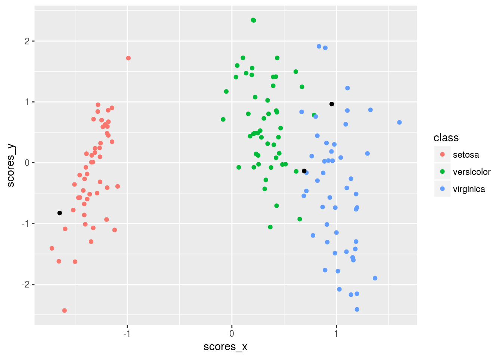

rrr for Linear Discriminant AnalysisLinear discriminant analysis is a classification procedure. We can turn it into a regression procedure – specifically a reduced-rank canonical variate procedure – in the following way.
Let each \(i = 1, 2, \dots, n\) observation belong to one, and only one, of \(K = s + 1\) distinct classes.
We can construct an indicator response matrix, \(\mathbf{Y}\) where each row \(i\) is an indicator response vector for the \(i\)th observation. The vector will have a 1 in the column that represents that class to which the observation belongs and will be 0 elsewhere.
We then regress this \(Y\) binary response matrix against the matrix \(X\) of predictor variables.
Linear discriminant analysis requires the assumptions that each class is normally distributed and that the covariance matrix of each class is equal to all others.
While these assumptions will not be met in all cases, when they are – and when the classes are well separated – linear discriminant analysis is a very efficient classification method.
iris Data Setlibrary(dplyr)
data(iris)
iris <- as_data_frame(iris)
glimpse(iris)## Observations: 150
## Variables: 5
## $ Sepal.Length <dbl> 5.1, 4.9, 4.7, 4.6, 5.0, 5.4, 4.6, 5.0, 4.4, 4.9,...
## $ Sepal.Width <dbl> 3.5, 3.0, 3.2, 3.1, 3.6, 3.9, 3.4, 3.4, 2.9, 3.1,...
## $ Petal.Length <dbl> 1.4, 1.4, 1.3, 1.5, 1.4, 1.7, 1.4, 1.5, 1.4, 1.5,...
## $ Petal.Width <dbl> 0.2, 0.2, 0.2, 0.2, 0.2, 0.4, 0.3, 0.2, 0.2, 0.1,...
## $ Species <fctr> setosa, setosa, setosa, setosa, setosa, setosa, ...iris_features <- iris %>%
select(-Species)
iris_class <- iris %>%
select(Species)Assessing the rank \(t\) of this reduced-rank regression is equivalent to determining the number of linear discriminant functions that best discriminate between the \(K\) classes, with \(\mathrm{min}\left(r, s\right) = \mathrm{min}\left(r, K - 1\right)\) maximum number of linear discriminant functions.
Generally, plotting linear discriminant functions against each other, i.e., the first and second linear discriminant functions, is used to determine whether sufficient discrimination is obtained.
Plotting techniques are discussed in the following section.
lda_pairwise_plot()args(lda_pairwise_plot)## function (x, class, lda_x = 1, lda_y = 2, rank = "full", type = "cov",
## k = 0, quadratic = FALSE, interactive = FALSE)
## NULLA typical graphical display for multiclass LDA is to plot the \(j\)th discriminant scores for the \(n\) points against the \(k\) discriminant scores.
lda_pairwise_plot(iris_features, iris_class, k = 0.0001)
lda()lda(iris_features, iris_class, k = 0.0001)## $prior
## setosa versicolor virginica
## 7.401487e-17 7.401487e-17 1.000000e+00
##
## $G
## # A tibble: 4 × 2
## LD1 LD2
## <dbl> <dbl>
## 1 -0.1427550 0.009711862
## 2 -0.2639139 0.905610891
## 3 0.3792278 -0.388369442
## 4 0.4826420 1.184645528
##
## $H
## # A tibble: 2 × 2
## LD1 LD2
## <dbl> <dbl>
## 1 -1.123703 -0.3319998
## 2 -0.265336 -1.1058423lda_scores()lda_scores(iris_features, iris_class, k = 0.0001)## $scores
## # A tibble: 150 × 3
## LD1 LD2 class
## <dbl> <dbl> <fctr>
## 1 -1.387251 0.125583983 setosa
## 2 -1.226743 -0.329163835 setosa
## 3 -1.288897 -0.111147085 setosa
## 4 -1.172385 -0.280353248 setosa
## 5 -1.399367 0.215173886 setosa
## 6 -1.325346 0.611160171 setosa
## 7 -1.241218 0.148631516 setosa
## 8 -1.308661 -0.004785237 setosa
## 9 -1.128974 -0.424580855 setosa
## 10 -1.263476 -0.395904243 setosa
## # ... with 140 more rows
##
## $class_means
## # A tibble: 3 × 3
## LD1 LD2 class
## <dbl> <dbl> <fctr>
## 1 -1.3498742 0.4053488 setosa
## 2 0.3239739 -1.3716811 versicolor
## 3 1.0259003 0.9663322 virginica